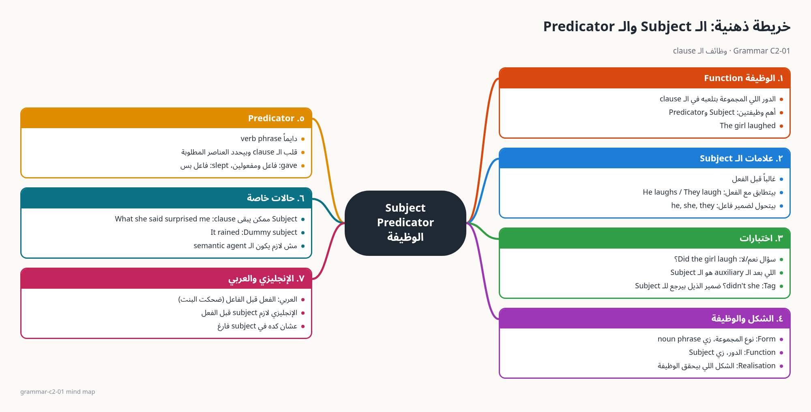

🦉
آداب اللغة الإنجليزية
⭐
0
🔥
استمر!
🧭
كورس 2، الجملة البسيطة 1: Subject وPredicator
📊
المستوى: من الصفر
كورس ٢ درس ١
🧩
القواعد الأكاديمية
📄 حمّل PDF الدرس
📝 ملخص الدرس (عربي) PDF
📝 Lesson Summary (English) PDF
🧠 الخريطة الذهنية PDF
🧠 شوف الخريطة الذهنية للدرس

كل دروس الكورس
الدرس اللي بعده
←